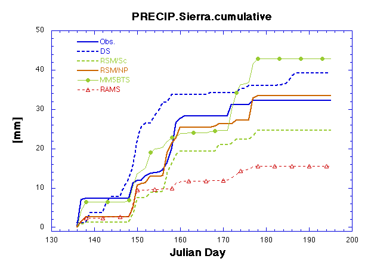
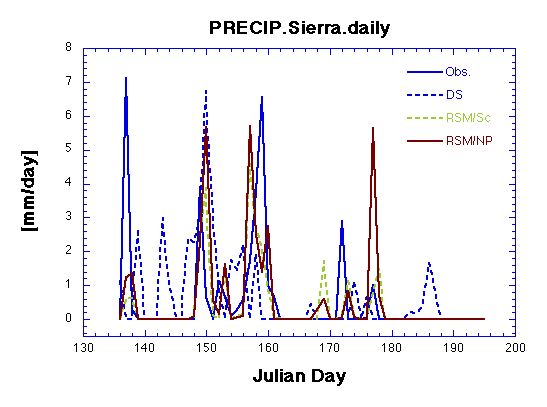
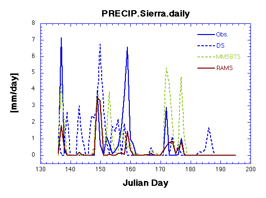
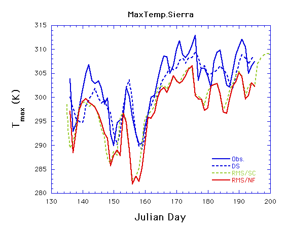
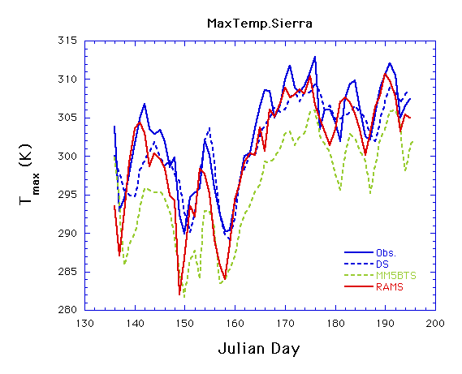
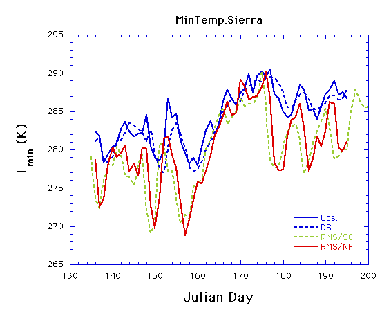
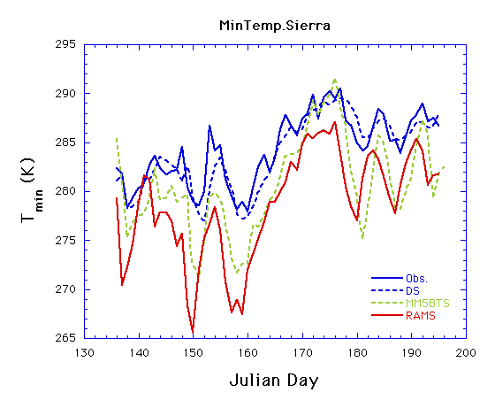

Preliminary PIRCS Experiment 1 Results
PLEASE NOTE:
Results linked to this page are preliminary. They
should not be discussed, cited or otherwise referenced outside of
PIRCS without consulting PIRCS modelers.
Output for Experiment 1a (1988)
A. Precipitation averaged over a "Sierra" domain
(118.125 W - 121.875 W; 38.75 N - 41.25 N)
DS = precipitation from Rob Wilby using a statistical downscaling routine
- Cumulative total precipitation

- Daily total precipitation - 1

- Daily total precipitation - 2

B. Min/max temperature over the "Sierra" domain
DS = min/max temperature from Rob Wilby using a statistical
downscaling routine
- Daily maximum temperature-1

- Daily maximum temperature-2

- Daily minimum temperature-1

- Daily minimum temperature-2
